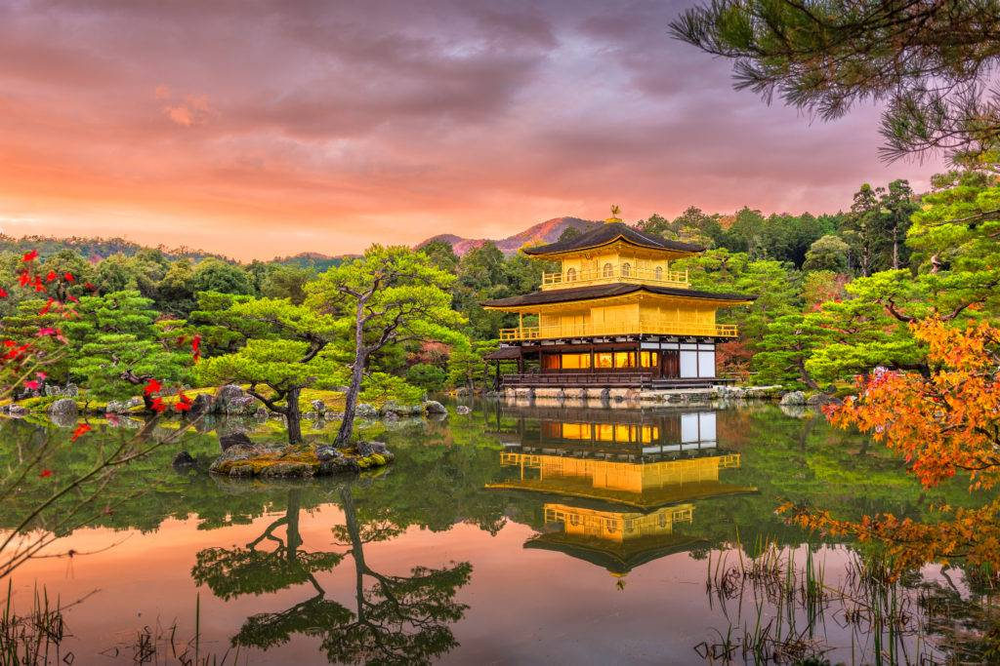
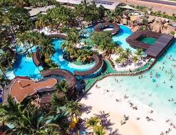

ㅤ


Tenho 10 cachorros: Evee, Pepa, Cacau, Belinha, Luna, Caleu, Melodi, Rabito, Rambo e Pingo
Já fui no cemitério/templo japonês Kinkaku ji em Itapecerica da Serra-SP.

Já fui em Olimpia, uma cidadea com o maior parque aquático do Brasil, Thermas dos Laranjais.

Já fui em Curitiba, capital do Parána, uma cidade muito linda e com muita cultura.

Quero conhecer a Russia, principalmente por sua cultura e pela neve.
Quero conhecer o Japão, pela cultura, comida e as atrações turísticas.

Quero conhecer a Inglaterra, pelo Big Bang e as outras atrações turísticas.